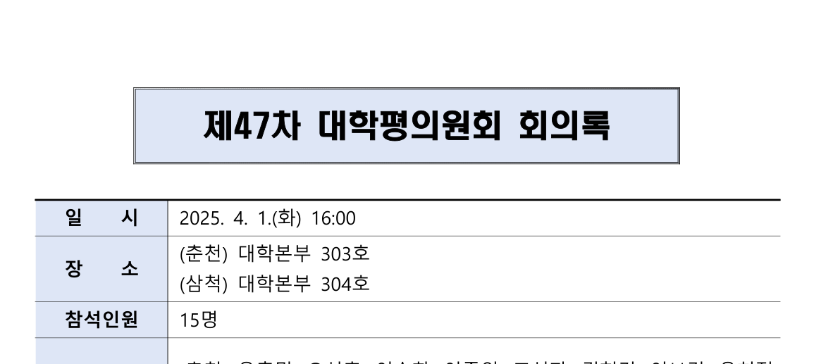
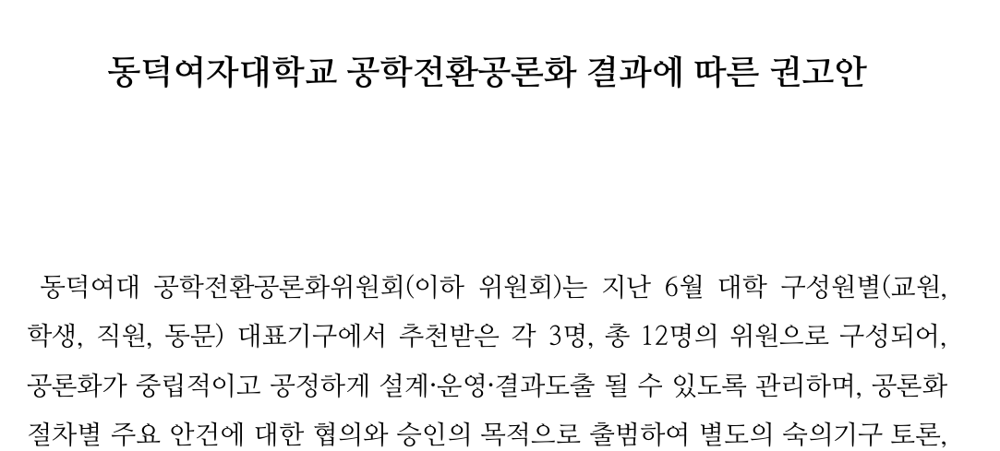

강원일보 · 2025.04.01 · 기사 제목 인용
강원대-강릉원주대 통합 추진 제동…
평의원회 부결로 혼란 불가피

A01P · 제47차 대학평의원회 회의록 1쪽
중간고사 대체 과제 · 대학 구조개편 갈등 비교 연구
공식 결정의 진전과 내부 공중 수용의 괴리

A01P · 제47차 대학평의원회 회의록 1쪽

D06 · 공식 권고안 1쪽
문제제기

4월 1일 8:12 부결 → 4월 28일 수정안 15:6 가결
서로 다른 회의의 표결 · 출석 20명 / 21명
권고·학칙 개정 뒤에도 학생 총투표 85.7% 반대
입시 지원자 감소는 인과 미확인 참고 지표강원대 대응
대학평의원회 표결 · 서로 다른 출석 모수

조직안의 수정 사실은 확인된다. 가결의 단일 원인인지는 확인되지 않는다.
동덕여대 이론 분석
교원·학생·직원 의견을 동등하게 반영한 1:1:1 가중 결과를 강조
D06 · D09 · D11학생 응답의 여대 유지 71.3%와 총투표 반대 85.7%를 강조
D07 · D10공론화 설치와 졸업 이후 전환 약속은 절차·수사 혼합적 수용으로 볼 수 있다. 그러나 핵심 결론과 가중 규칙을 둘러싼 입장 차이는 남았다.